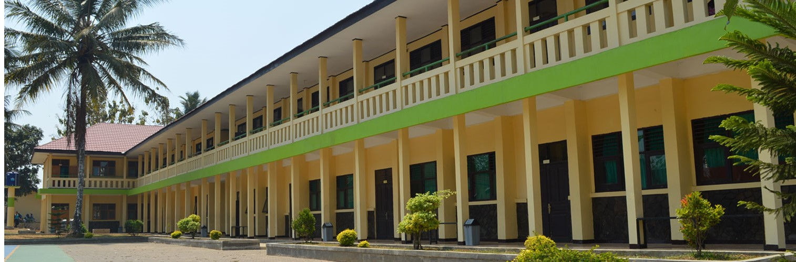
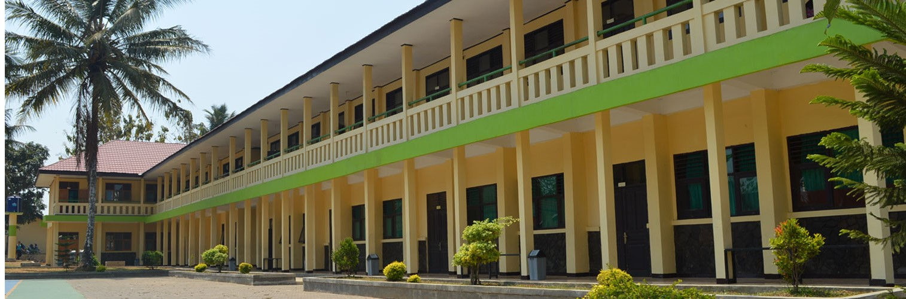

.jpg) 

.jpg)
TENTANG SMK NEGERI 1 CIBADAK
SMK Negeri 1 Cibadak didirikan pada tanggal 12 Juni 1965 berdasarkan Surat Keputusan Menteri P & K Republik Indonesia No. 69/Dirpl/65 dengan nomenklatur Sekolah Teknologi Menengah Pertanian atau STM Pertanian. SMK Negeri 1 Cibadak merupakan sekolah pertanian negeri pertama di Kabupaten Sukabumi di bawah naungan Depatemen Pendidikan dan Kebudayaan. Saat pertama berdiri, sekolah berlokasi di Bojong Masjid Desa Cibadak. Saat itu dengan jumlah siswa yang relatif sedikit, tempat belajar masih menumpang di sebuah Madrasah di Bojong Masjid Cibadak selama kurang lebih 3 tahun. Selanjutnya pada tahun 1971 tempat belajar pindah ke gedung pertunjukan budaya Tionghoa di Jalan Perintis Kemerdekaan Cibadak di samping SD Negeri 5 dan SD Negeri 6 Cibadak. Sekolah berlokasi di sana hingga tahun 1974/1975.
Pada tahun pelajaran 1975/1976 STM Pertanian Negeri Cibadak mendapat bantuan gedung baru dari Pemerintah Daerah sebanyak 6 ruang dengan sebidang tanah HGB seluas 8118 M2 di Desa Karangtengah Kecamatan Cibadak. Saat itu jumlah siswa kurang lebih antara 60-90 orang siswa dengan satu jurusan yaitu jurusan Processing.
Sesuai perkembangan teknologi dan era globalisasi pada tahun 1993 terjadi perubahan nama sekolah dari SMT Pertanian menjadi SMK Negeri 1 Cibadak berdasarkan SK Mendikbud No. 088/1993 dan memiliki 4 (empat) jurusan, Teknologi Hasil Pertanian Budidaya Tanaman Budidaya Ternak Budidaya Ikan Air Tawar
Pada tahun 2004 SMK Negeri 1 Cibadak membuka Program Studi Keahlian baru yaitu Multimedia sehingga sampai sekarang memiliki 5 Program Studi Keahlian dan sudah banyak memiliki link atau hubungan industri dengan beberapa perusahaan termasuk dengan JIAEC-Jepang dan PT Medion sehingga hampir 150 siswa yang sudah bekerja di Jepang dan beberapa alumni lainnya yang bekerja di Medion sebagai staf ahli. Selain itu banyak bekerja di seluruh bidang termasuk TNI, Pemerintahan, Tenaga Penyuluh, Guru, Pengusaha dan lain-lain. Mereka bergabung dalam satu wadah alumni SMK Negeri 1 Cibadak yang diketuai oleh alumni tahun 1976 yang sekarang menjabat sebagai Kepala SMK Negeri 1 Cibadak saat ini.